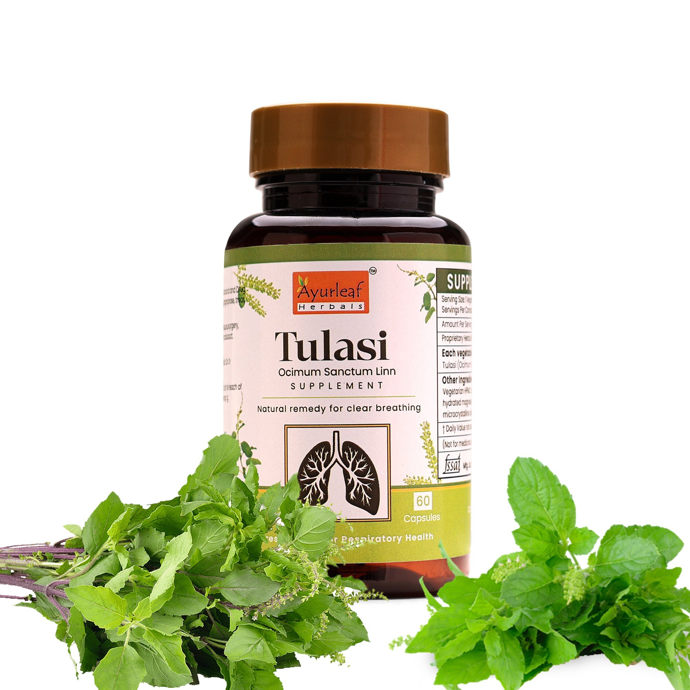

An annual delicate herb cultivated extensively in tropical
climate of the country.
It is also planted in kitchen garden and as an indoor plant since it is kept
sacred in Hindu philosophy.
Pacifies kapha and vata.
Read more about various ailments, it's causes, symptoms, ayurvedic treatments, etc.

Tulsi Medicinal Uses & Benefits
Indian mythology attaches a great significance to Basil by recognizing it as a holy herb.
Perhaps, such significance comes from the actual health applications of the herb.
Its use is recommended as a first aid in the treatment of respiratory, digestive and skin diseases.
Apart from these common ailments, Ayurveda also recognizes its use for the diseases ranging up to tumerous growths.
Experimental studies identify it to be a highly promising immunomodulator, cytoprotective and anticancer agent.
Following are the benefits & uses of Tulsi plant or Holy Basil/Ocimum Sanctum.
1. Promotes Healthy Heart
Holy basil contains vitamin C and antioxidants such as eugenol,
which protects the heart from the harmful effects of free radicals.
Eugenol also proves useful in reducing cholesterol levels in the blood.
2. Anti-Aging
Vitamin C and A, phytonutrients, in Holy Basil are great antioxidants
and protect the skin from almost all the damages caused by free radicals.
3. Treats Kidney Stones
Tulsi acts a mild diuretic & detoxifying agent which
helps in lowering the uric acid levels in the body.
Acetic acid present in holy basil helps in the breakdown of the stones.
4. Relieves Headaches
Tulsi is a natural headache reliever which can also relieve migraine pain.
5. Fights Acne
Holy basil helps kill bacteria and infections.
The primary active compound of holy basil oil is eugenol which helps fight skin related disorders.
Ocimum Sanctum helps treat skin infections both internally and externally.
6. Cures Respiratory Disorders
Due to the presence of compounds like camphene, eugenol,
and cineole, tulsi cures viral, bacterial, and fungal infections of the respiratory system.
It can cure various respiratory disorders like bronchitis & tuberculosis.
7. Rich Source of Vitamin K
Vitamin K is an essential fat-soluble vitamin that plays an important role in bone health and heart health.
8. Oral Health
Tulsi is a natural mouth freshener and an oral disinfectant.
Ocimum Sanctum can also cure mouth ulcers. Holy basil
destroys the bacteria that are responsible for dental cavities,
plaque, tartar, and bad breath, while also protecting the teeth.
TABLETS


